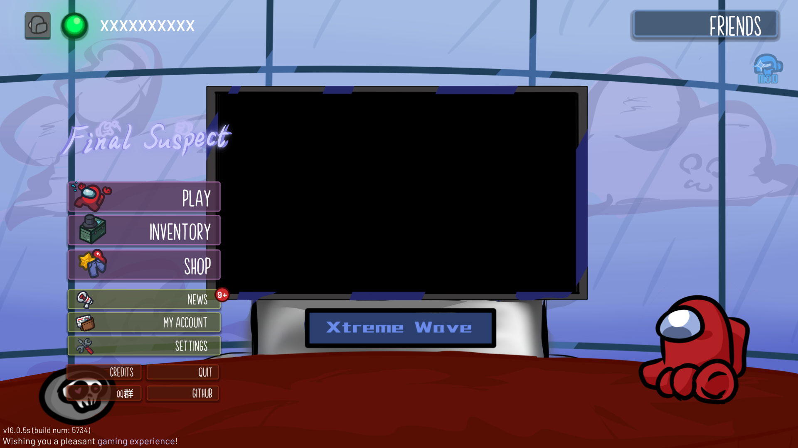

FinalSuspect
切換主頁風格
在FinalSuspect中，我們為玩家精心準備了6種風格各異的可切換背景，涵蓋經典場景、節日限定和原創設計，為您的遊戲體驗增添更多個性化色彩：
-
逐光尋曉(FS經典背景)

隨著時間的推移，北半球的冬天迎來尾聲，春意正在各處復蘇。
眺望米拉的雪景，內心中的回憶是否喚醒?暖流依舊心中流淌。
無論嫌疑最終落在誰身，無論真理最後破碎於誰手，在煥然一新的體驗中，頭腦風暴，留下全新的快樂回憶。作者：KpCam
-
赤心熾愛（TONEX经典背景）

我們不會就此跌下、不會就此放棄、不會讓玩家失望、更不會停止進步。
若有人冷眼相待，我們會證明給所有人看！伴著熱愛，我們再次起航。作者：KpCam
-
尾緣諧樂 (新春特別節目）

祉，祝予福 緣，織於心，諧，連與情 樂，安喻人
摯緣，創諧樂 致遠，諧得樂，至元，皆懷樂 只願，人皆樂
願每個人在新的一年都能尋得自己的道路，帶著我們的祝福，勇往直前，追尋屬於自己的人生吧！作者：小黃117
-
極致演播廳（新春特別節目）
——花開似浪，溫柔如風，願大家心海如風，事事如意
——春風浩蕩，浪湧千里，願大家勇立潮頭，蒸蒸日上
——歡迎來到XtremeWave 極致狂瀾——新春特別節目！作者：小黃117
-
XtremeWave極致狂瀾

「極行致遠，夢領狂瀾！」
作者：Slok
-
緊急會議！（TORE經典背景）

「誰是內鬼！？」
作者：AIGE
切換主頁風格功能不影響遊戲平衡，所有玩家可自由選擇喜歡的背景。